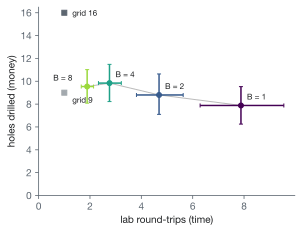
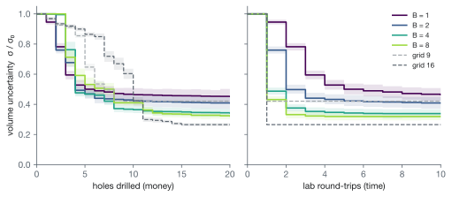
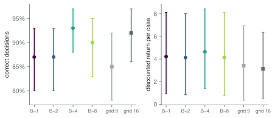

Waiting for the Assay Lab
TL;DR
- Mineral exploration is a reinforcement learning loop. You drill a hole, a lab measures the rock, you update your picture of what's underground, and you drill again.
- Lab results take weeks, so real programs drill several holes before hearing back. I tested how much that hurts an AI drilling planner.
- Drilling 8 holes per lab round made the same mine-or-walk-away decisions as drilling 1 at a time. It needed 4× fewer lab rounds and about 2 more holes.
- Most of the value of adapting comes in the first round or two. Faster labs mainly save time.
This project began with one realization: mining exploration is classical RL.
I had been reading about where mining is headed. What stood out was that the bottleneck is finding new deposits, not running the mines we already have.
The IEA expects copper supply to fall about 30% short of demand by 2035, partly because too few deposits are being found. A new discovery takes about 16 years to become a working mine. So the mines we'll need in 2040 have to be found in the next few years. Yet exploration budgets have fallen three years in a row.
So getting better at exploration matters. And most of exploration is making expensive decisions with very little information.
At the same time I was taking a reinforcement learning (RL) class. The first thing you learn is the basic loop. An agent takes an action. The environment responds with an observation. The agent updates what it believes, and acts again.
Partway through the course I realized this is exactly what exploration looks like. You drill a hole. A lab measures how much metal is in the rock, which is called an assay. You update your picture of what's underground. Eventually you decide to build a mine or walk away.
That made me see exploration as a sequence of decisions, not just a prediction problem.
Prediction
Most of the AI work in exploration I came across is about prediction. KoBold Metals and Earth AI train models on geological maps, satellite images and soil chemistry to estimate where deposits are likely. That's useful, because it tells you where to look. (KoBold also uses probabilistic methods to choose drill holes, so this is a difference of emphasis.)
But prediction seems to hit a ceiling fairly quickly. In published studies, simple models like logistic regression often predict deposits about as well as complex machine learning (for example). That makes sense, since any one region has only a handful of known deposits to learn from.
There's also a mathematical reason. Geologists often model the ground as two parts. One is the big structure, like the shape and location of an ore body. The other is small-scale variation around it, which behaves like random noise.
For the noise part, two facts are well known. The best guess at any spot is a weighted average of the nearby holes, a method called kriging, and no fancier model beats it [3]. And how unsure you are at a spot depends only on where your holes are, not on what they found [3, 4].
The second fact has a useful consequence. For the noise part, nothing you learn changes where you should drill next, so you could plan those holes in advance. Adapting only helps with the big structure, meaning where the ore body is, how large it is, and whether it's worth mining. That's the part where each result should change where the next hole goes.
Mern & Caers
This led me to a paper by John Mern and Jef Caers [1]. They treated exploration as an RL problem where the planner can't see underground, only the holes it has drilled. Their planner, POMCPOW [2], is a form of Monte Carlo tree search, the method behind AlphaGo. It picks each hole after seeing the result of the previous one.
On their test problem it matched the accuracy of a 16-hole grid with far fewer holes. It also learned, without being told, to step outward and find the edge of the deposit, which is what a geologist would do.
Slow labs
But the planner assumes each result comes back before it picks the next hole. Real drilling doesn't work that way. Rock samples are shipped to a lab, and results come back weeks later. Explorers have reported lab queues of 60 to 70 days, and after COVID some waits stretched to months.
Companies are paying to shorten this. A newer method, PhotonAssay, measures gold in about two minutes per sample instead of hours (CSIRO). Barrick has built these labs at its mines. Some smaller explorers have bought their own sample labs just to skip the queue (Middle Island, Nova Minerals).
Drilling less and finishing sooner are the two numbers people care about. Terra AI's copper back-test, for example, reports 58% less drilling and a 44% shorter timeline. This experiment looks at how the two trade off.
The question: how much does a planner lose if it only gets results back every few holes?
Theory suggests not much. In other fields, drilling (or testing) in batches loses little if you fill in the missing results with your best guesses [5, 6]. And a few rounds of adapting often capture most of the benefit of adapting after every step [7, 8]. But those results are for problems like finding the highest point on a map. Exploration ends in one yes-or-no decision about whether a deposit pays for itself. I couldn't find anyone who had tested batching there.
The answer also says something about fast labs. If batching is cheap, then faster results mainly save time, not improve decisions.
Experiment
I used the authors' code and test case [1] and changed one thing. In their setup:
- World. A 50 by 50 map with one ore body of random location and size, plus noise. The planner knows this recipe but not the map.
- Belief. 1,000 candidate maps that fit the holes drilled so far.
- Planning. Before each move, the tree search plays out 10,000 imagined campaigns in randomly drawn maps and picks the move that does best on average. A move is a new hole or stopping.
- Stopping. When another hole isn't worth its cost, or at 25 holes.
- Payoff. Each hole costs 0.1. Mining pays the ore minus 150, and walking away pays 0. So the right call is to mine exactly when the deposit holds more than 150 units of ore.
My change is the batch size B, the number of holes chosen before any results come back. Pending holes are filled in with their predicted grade, a trick called the kriging believer [5]. A batch closes early if the planner wants to stop, and it decides to mine only once every result is back. B = 1 is the original setup.
I ran B = 1, 2, 4 and 8, plus the paper's 9- and 16-hole grids, on the same 100 deposits (22 profitable) with the same random seeds.
Results
4× fewer lab rounds, 2 more holes
With batches of eight, the planner needed about two lab rounds instead of eight, and drilled about two more holes. The extra holes come at the end. Holes in a batch are committed before their results arrive, so the planner sometimes drills a few that, in hindsight, it didn't need.

Each hole tells you about as much
I expected each hole to be less useful when drilled blind, but the difference was small. Hole for hole, every batch size reduced uncertainty about the deposit at about the same rate, and all of them beat the grids. Counted by lab rounds instead, bigger batches were far ahead. After one round, batches of eight had cut the uncertainty by more than half. Drilling one at a time had barely started.

Same decisions
Batch size didn't noticeably change how often the planner made the right call, or how much profit it made. Batches of eight mined 21 of the 22 profitable deposits. The 9-hole grid drilled about as many holes and mined only 15. Every wrong call, at every batch size, was on a deposit close to break-even.

Takeaways
In this setting, a planner doesn't need to wait for every result.
Most of the value of adapting comes in the first round or two, while the planner is finding the ore body. After that, batches fill in the details well. Faster labs would mostly save time here rather than improve decisions. But when a discovery already takes 16 years to become a mine, time is worth a lot.
More broadly, the planner worked because it knew what it didn't know. It had a model grounded in geology, it tracked its own uncertainty, and it used that uncertainty to decide where to drill, when to stop, and how long it could wait for results. That's the kind of system I'd like to work on.
The next step I want to try is a planner that knows it's drilling in batches and picks each batch as a whole. That might recover some of the extra holes.
Limits
- The geology is 2D and synthetic, assays have no error, and the planner's prior is the true model.
- The paper uses a max backup in the search tree, but the public code and I use the mean, which likely explains why my B = 1 baseline recovers 80% of profitable ore against the paper's 92.6%.
- With 100 deposits, accuracy intervals are about ±6 points.
- To fit on a laptop I drew the belief update's Gaussian samples in one batch, which gives the same distribution 2.5 times faster.
Appendix
| Policy | Holes | Lab rounds | Correct | Return | Profitable mined |
|---|---|---|---|---|---|
| B = 1 | 7.9 | 7.9 | 87% | 4.22 | 17 / 22 |
| B = 2 | 8.8 (+0.9 [−0.7, 2.6]) | 4.7 | 87% (0 [−6, 6]) | 4.13 (−0.10 [−0.51, 0.31]) | 16 / 22 |
| B = 4 | 9.8 (+2.0 [0.0, 3.8]) | 2.8 | 93% (+6 [−2, 14]) | 4.65 (+0.43 [−0.34, 1.26]) | 20 / 22 |
| B = 8 | 9.5 (+1.7 [0.1, 3.2]) | 1.9 | 90% (+3 [−4, 10]) | 4.14 (−0.08 [−1.26, 0.99]) | 21 / 22 |
| grid 9 | 9 | 1 | 85% (−2 [−11, 7]) | 3.41 (−0.81 [−2.13, 0.45]) | 15 / 22 |
| grid 16 | 16 | 1 | 92% (+5 [−2, 12]) | 3.13 (−1.09 [−2.20, −0.01]) | 17 / 22 |
Means over 100 deposits. In parentheses is the paired difference from B = 1 with a 95% bootstrap interval. Accuracy differences are in percentage points. Mean batch sizes were 1.9, 3.6 and 5.1 for B = 2, 4 and 8, because the planner often stops filling a batch early.
References
- Mern, J. and Caers, J. The Intelligent Prospector v1.0: geoscientific model development and prediction by sequential data acquisition planning with application to mineral exploration. Geoscientific Model Development 16, 289–313 (2023).
- Sunberg, Z. and Kochenderfer, M. Online algorithms for POMDPs with continuous state, action, and observation spaces. ICAPS (2018).
- Rasmussen, C. E. and Williams, C. K. I. Gaussian Processes for Machine Learning. MIT Press (2006), ch. 2.
- Krause, A., Singh, A. and Guestrin, C. Near-optimal sensor placements in Gaussian processes. JMLR 9 (2008).
- Ginsbourger, D., Le Riche, R. and Carraro, L. Kriging is well-suited to parallelize optimization. In Computational Intelligence in Expensive Optimization Problems, Springer (2010).
- Desautels, T., Krause, A. and Burdick, J. Parallelizing exploration–exploitation tradeoffs in Gaussian process bandit optimization. JMLR 15 (2014).
- Golovin, D. and Krause, A. Adaptive submodularity: theory and applications in active learning and stochastic optimization. JAIR 42 (2011).
- Esfandiari, H., Karbasi, A. and Mirrokni, V. Adaptivity in adaptive submodularity. COLT (2021).